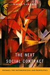

|
Addressing Violence Against Women on College Campuses
Edited by Kaukinen, Catherine, Michelle Hughes Miller, and Ráchael A. Powers
What we know, what we are doing, and how we can improve our prevention of and response to violence against women on college campuses
330 pp • 6x9 • Spring 2017
paper 978-1-4399-1376-5
cloth 978-1-4399-1375-8 |
|
Bernie Sanders and the Boundaries of Reform
Socialism in Burlington
Conroy, W. J.
With a new Preface by the Author
A reissued edition of a significant case study of the achievements and failures of Bernard Sanders' radical administration in 1980s Burlington, VT
Reissued Edition
278 pp • 6x9 • Spring 2017
paper 978-1-4399-1481-6
|
|
Challenging Perspectives on Street-Based Sex Work
Edited by Hail-Jares, Katie, Corey S. Shdaimah, and Chrysanthi S. Leon
Essays that provide an on-the-ground understanding of people whose lives are impacted by sex work
308 pp • 6x9 • Spring 2017
paper 978-1-4399-1454-0
cloth 978-1-4399-1453-3 |
|
Empowered by Design
Decentralization and the Gender Policy Trifecta
Rincker, Meg
Do reforms that decentralize the state actually empower women?
210 pp • 6x9 • Spring 2017
paper 978-1-4399-1397-0
cloth 978-1-4399-1396-3 |
|
Envisioning Emancipation
Black Americans and the End of Slavery
Willis, Deborah and Barbara Krauthamer
What freedom looked like for black Americans in the Civil War era
New in Paperback!
240 pp • 7x10 • Spring 2017
paper 978-1-4399-0986-7
cloth 978-1-4399-0985-0
|
|
The Eternal Present of Sport
Rethinking Sport and Religion
Grano, Daniel A.
Rethinking the changes surrounding religion and elite sport cultures
286 pp • 6x9 • Spring 2017
paper 978-1-4399-1280-5
cloth 978-1-4399-1279-9 |
|
Gross Misbehavior and Wickedness
A Notorious Divorce in Early Twentieth-Century America
Elson, Jean
This fascinating story of the troubled marriage and acrimonious divorce of Nina and James Walker elucidates early twentieth-century gender and family mores
340 pp • 6x9 • Spring 2017
paper 978-1-4399-1391-8
cloth 978-1-4399-1390-1 |
|
The Hirschfeld Archives
Violence, Death, and Modern Queer Culture
Bauer, Heike
Examines the violence of queer existence in the first part of the twentieth century
236 pp • 6x9 • Spring 2017
paper 978-1-4399-1433-5
cloth 978-1-4399-1432-8 |

|
Hung Jury
The Diary of a Menendez Juror
Thornton, Hazel
20 Years Later
A reissued edition of a riveting account of serving on the jury of a high-profile murder trial
Reissued Edition
206 pp • 5.5x8.25 • Spring 2017
paper 978-1-4399-1513-4
|
|
Incidental Racialization
Performative Assimilation in Law School
Pan, Yung-Yi Diana
Examining racialization, inequality, and professional socialization
220 pp • 6x9 • Spring 2017
paper 978-1-4399-1385-7
cloth 978-1-4399-1384-0 |
|
Journeys in Sociology
From First Encounters to Fulfilling Retirements
Edited by Darling, Rosalyn Benjamin and Peter J. Stein
Twenty-two eminent retired sociologists reflect on their lives and their career choices
264 pp • 6x9 • Spring 2017
paper 978-1-4399-1475-5
cloth 978-1-4399-1474-8 |

|
Klezmer
Music and Community in Twentieth-Century Jewish Philadelphia
Netsky, Hankus
The story of Philadelphia Jewish life through the music of klezmer
New in Paperback!
186 pp • 6x9 • Spring 2017
paper 978-1-4399-0904-1
cloth 978-1-4399-0903-4 |
|
Knowledge for Social Change
Bacon, Dewey, and the Revolutionary Transformation of Research Universities in the Twenty-First Century
Benson, Lee, Ira Harkavy, John Puckett, Matthew Hartley, Rita A. Hodges, Francis E. Johnston, and Joann Weeks
Argues for and proposes concrete means to radically transform research universities to function as democratic, civic, and community-engaged institutions
206 pp • 6x9 • Spring 2017
paper 978-1-4399-1519-6
cloth 978-1-4399-1518-9 |
|
The Magic of Children's Gardens
Inspiring Through Creative Design
Tai, Lolly
With a Foreword by Jane L. Taylor
Explores the purpose, beauty, and benefits of creating children's outdoor environments in public gardens
352 pp • 8x10 • Spring 2017
cloth 978-1-4399-1447-2
|
|
The Man-Not
Race, Class, Genre, and the Dilemmas of Black Manhood
Curry, Tommy J.
Introduces the conceptual foundations for Black Male Studies, going beyond gender theories that cast the Black Male as a pathological aspiring patriarch
306 pp • 6x9 • Spring 2017
paper 978-1-4399-1486-1
cloth 978-1-4399-1485-4
|
|
The New Freedom and the Radicals
Woodrow Wilson, Progressive Views of Radicalism, and the Origins of Repressive Tolerance
Kramer, Jacob
How progressives thought about radical politics at the beginning of the twentieth century
New in Paperback!
242 pp • 6x9 • Spring 2017
paper 978-1-4399-0839-6
cloth 978-1-4399-0838-9
|
 |
The Next Social Contract
Animals, the Anthropocene, and Biopolitics
Gabardi, Wayne
A comprehensive, interdisciplinary analysis of the fate of animals in the twenty-first century Anthropocene era
234 pp • 6x9 • Spring 2017
paper 978-1-4399-1412-0
cloth 978-1-4399-1411-3
|
|
Pennsylvania Stories—Well Told
Ecenbarger, William
An engrossing compendium of stories on the people, places, and events that make Pennsylvania unique. Well told.
218 pp • 5.5x8.25 • Spring 2017
cloth 978-1-4399-1465-6 |
|
Phantom Skies and Shifting Ground
Landscape, Culture, and Rephotography in Eadweard Muybridge's Lost Illustrations of Central America
Wolfe, Byron and Scott Brady
A fascinating collaborative investigation of some of the earliest photographs of Latin America by the renowned nineteenth-century photographer Eadweard Muybridge
228 pp • 12.25x10.75 • Spring 2017
Distributed by Temple University Press for Radius
cloth 978-1-942185-14-7 |
|
Philadelphia
A Brief History
Revised and Updated Edition
Simon, Roger D.
A concise and readable overview of the history of Philadelphia from its founding to the early twenty-first century
156 pp • 6x9 • Spring 2017
Published in association with Pennsylvania Historical Association
paper 978-1-932304-26-8
|
|
The Politics of New Immigrant Destinations
Transatlantic Perspectives
Edited by Chambers, Stefanie, Diana Evans, Anthony M. Messina, and Abigail Fisher Williamson
Examining the challenges posed by the proliferation of cultural, ethnic, and/or religious diversity in new destinations for immigrants in Europe and the United States
348 pp • 6x9 • Spring 2017
paper 978-1-4399-1463-2
cloth 978-1-4399-1462-5 |

|
Reimagining Courts
A Design for the Twenty-First Century
Flango, Victor E. and Thomas M. Clarke
Promotes practical reform ideas to make courts more effective, more efficient, and more customer friendly
New in Paperback!
230 pp • 5.5x8.25 • Spring 2017
paper 978-1-4399-1168-6
cloth 978-1-4399-1167-9 |
|
Shaming the Constitution
The Detrimental Results of Sexual Violent Predator Legislation
Perlin, Michael L. and Heather Ellis Cucolo
A new approach to the complex area of sex offender laws and policies
330 pp • 6x9 • Spring 2017
paper 978-1-4399-1292-8
cloth 978-1-4399-1291-1 |
|
Somalis in the Twin Cities and Columbus
Immigrant Incorporation in New Destinations
Chambers, Stefanie
Examining the political, economic and social incorporation of Somali Americans in Minnesota's Twin Cities and in Columbus, Ohio
246 pp • 5.5x8.25 • Spring 2017
paper 978-1-4399-1442-7
cloth 978-1-4399-1441-0 |

|
Upon the Ruins of Liberty
Slavery, the President's House at Independence National Historical Park, and Public Memory
Aden, Roger C.
A behind-the-scenes look at the development of the memorial to slavery in Independence Mall
New in Paperback!
264 pp • 6x9 • Spring 2017
paper 978-1-4399-1200-3
cloth 978-1-4399-1199-0 |
Click here to download the catalog (pdf). |